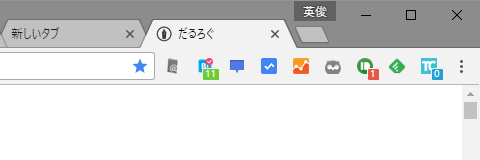
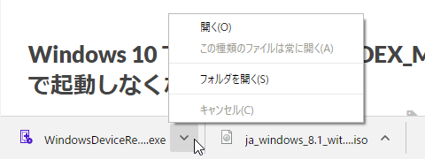
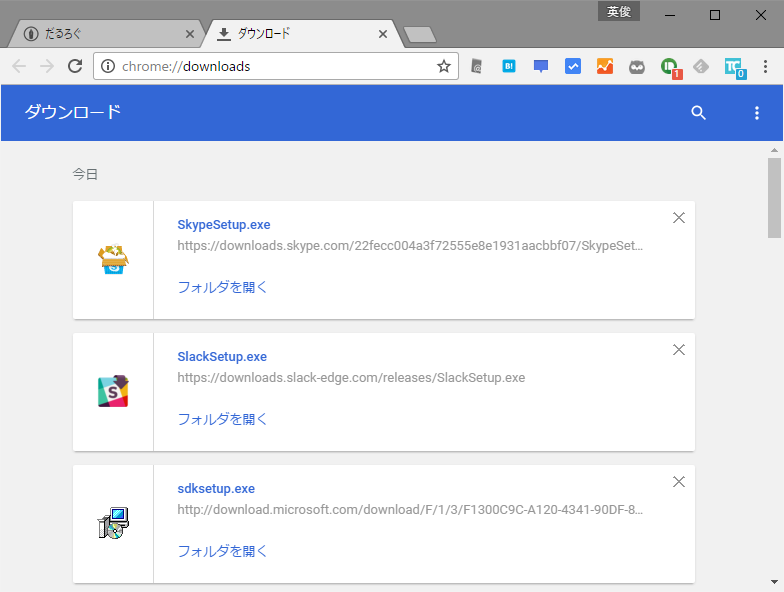
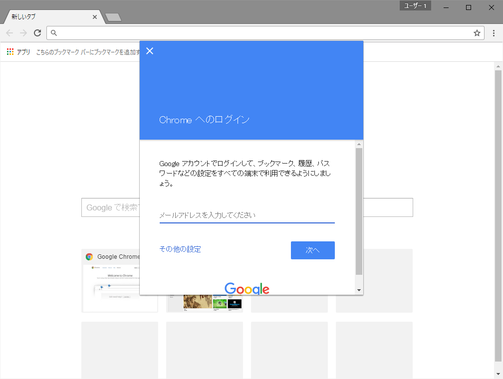
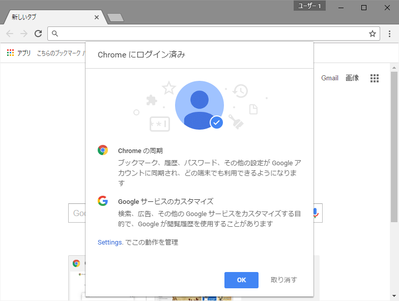
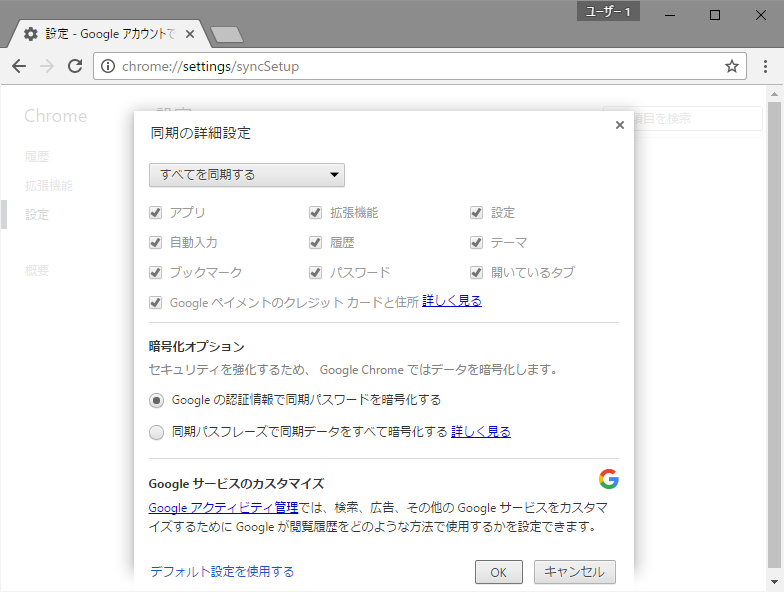

Google Chrome 53：見た目で変わった（かもしれない）ところ
公開日：
マテリアルデザインになったらしい。全体的に薄い感じになった。
タブと［Google Chrome の設定］ボタン

タブはカクカクに、［Google Chrome の設定］ボタンは 横線3本 → 縦点3個 になった。ウイルスバスターが拡張機能を仕込んだときボタンのアイコンが変わったから、アップデート通知なんかも以前よりわかりやすくなってるかもしれないな。
あと、拡張機能のインジケーターがやたらカラフルになったな？ こんなんだったっけ。
ページ内検索

前のデザインがあんまり思い出せないんだが、こっちも変わった。
ダウンロードシェルフ

こちらもフラットに。

ダウンロードページがマテリアルデザインなのは前からだっけ？（よく知らない
ブックマーク画面が相変わらず古臭いので、なんとかしてほしいな。
ユーザー関連

ユーザーのログイン画面が変わってた。

以前よりも親切な感じ（変わってるよね？ ここも）。

リンクをクリックすると同期の詳細設定画面に飛べる。